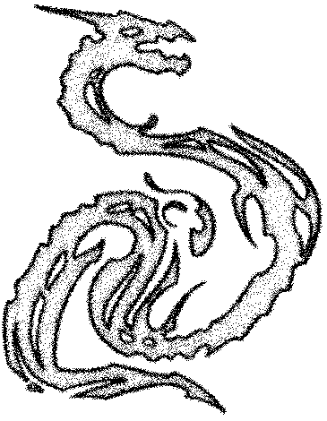
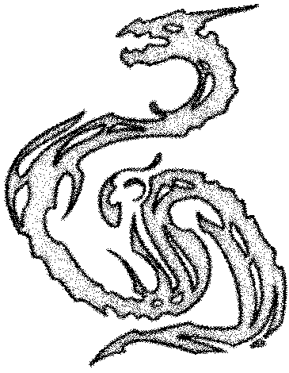
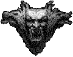

Não existe vida no mais distante abismo, apenas a forma e sua dissolução.
-----



Não existe vida no mais distante abismo, apenas a forma e sua dissolução.
-----

Pelo presente instrumento, o indivíduo que ao final assina, agindo por sua própria conta e risco, manifesta sua adesão aos preceitos que regem a travessia, sujeitando-se às seguintes condições de existência:
I. Fica estabelecido o dever de transmutar a percepção comum em uma leitura própria do real. A partir deste ato, todo fenômeno manifesto — seja ele de ordem física ou imaterial — será recebido e processado como comunicação direta do fluxo infinito com a alma do signatário, constituindo um sinal inequívoco e inquestionável com sua essência.
II. O signatário assume o compromisso de ofertar, sem qualquer ressalva, a totalidade de seus recursos existenciais, incluindo a substância de si mesmo e a herança de sua personalidade, no Cálice de Babalon. Entende-se que tal gesto não é mera cessão, mas a aniquilação definitiva da identidade anterior em favor da passagem.
III. No que tange à realização alcançada, impõe-se o dever de absoluto silêncio. Reconhece o aderente que, nas instâncias do Abismo, a palavra perde sua função de eco e sua capacidade de registro, sendo o silêncio a única prova de integridade do compromisso ora assumido.
IV. O signatário se obriga a trabalhar sem apego, a caminhar segundo a verdadeira vontade, e a se apoiar apenas sobre si mesmo.
V. Este pacto permanece vigente em caráter permanente, projetando seus efeitos até o encontro definitivo na Cidade das Pirâmides. A assinatura abaixo representa a ratificação final de que tudo aquilo que o indivíduo é e carrega encontra-se agora depositado e selado.
Declarado que, para os devidos fins de expressão simbólica, em testemunho da verdade e para que produza os efeitos de fé, o presente termo é ratificado mediante a marca abaixo.
Corredor 777 © 2026